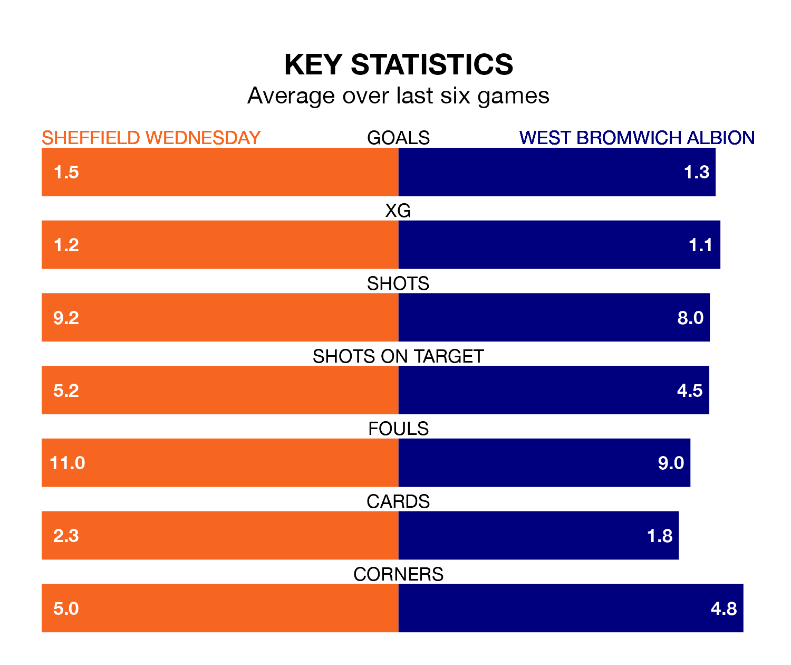

Struggling Sheffield Wednesday face West Bromwich Albion at Hillsborough on Saturday looking to build on a win in their last league outing.
After securing all three points with a 3-1 victory over Blackburn Rovers on April 21, the Owls sit 21st in EFL Championship.
They travel to play a West Bromwich side fifth in the standings, who lost in their last match, 2-1 against Leicester City, on April 20.
In Alex Palmer, West Bromwich can rely on one of the league's safest pair of hands. He has kept 17 clean sheets in his 44 appearances this season, and only one other 'keeper – Leeds United's Illan Meslier – has been able to prevent the opposition scoring on more occasions in EFL Championship.
In Wednesday's net, James Beadle has six clean sheets in 17 games. He has conceded a goal every 67 minutes, 40% more often than the 97 minutes between goals for Alex Palmer.
With 39 goals in 44 games so far this season, the Owls are the league's second-lowest scorers with 0.9 goals per game. And they are conceding more than average, letting in 68 goals at a rate of 1.5 per game.
Albion, meanwhile, are above average scorers, with 1.5 goals per game, compared to a league average of 1.3. They have conceded 1.0 goal per game.
The home side are in mixed form in EFL Championship, with two wins and three draws from their last six games.
With a win and three draws over that period, the Baggies' form is worse – they have taken six points from 18, compared to Wednesday's nine.
Updated: 07:59 (UTC), 26/04/24